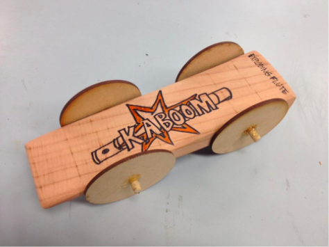
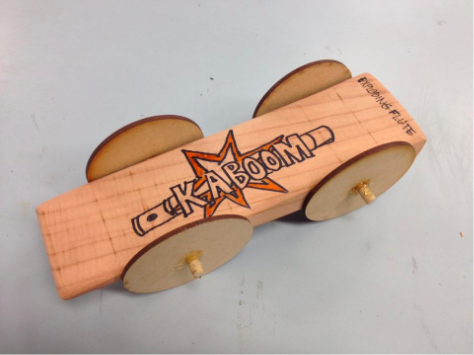
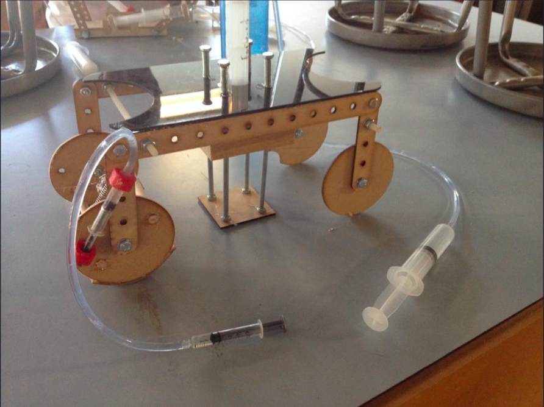
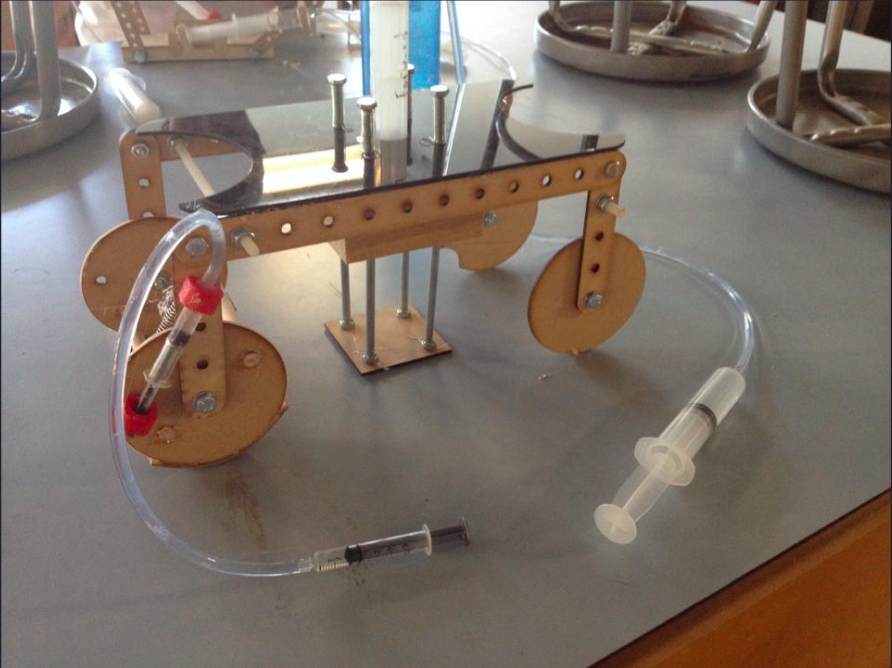
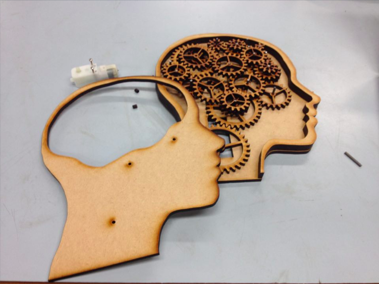
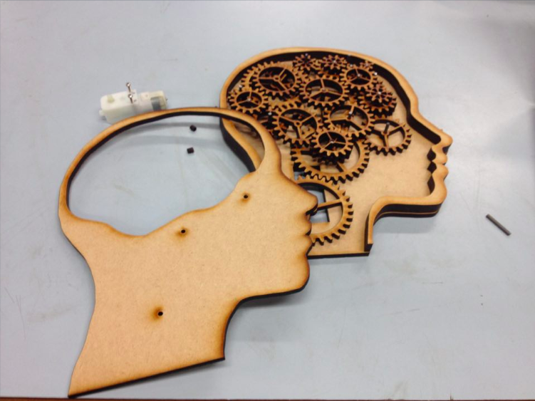

<title> lick wilmerding high School - technical arts :
kinetics</title>
</head>
<body>
<p id = "about">
<p id = "projects ">
</body>
metal fabrications: kinetics (fall 2018)
<br>
metal fabrications: kinetics is a semester-long techincal arts course offered at lick-wilmerding high school. i took this class during the fall semester of my junior year. in the class, we learned about pneumatics, hydraulics, and simple machines like levers and pulleys. this class mainly focused on the mechanics of motion, looking at concepts like gears, cams, levers, and linkages, and taught me how I could use these to create mechanical advantage.
<br>
not only did I learn a lot, but I was also able to have a lot of freedom with many of the choices I made - I chose what materials to work with, what concepts I wish to use, and what final project I wanted to complete. because this course is so focused on kinetics and motion, I was able to apply what I learned in my physics course into the designing phase of my assignments.
</p>
<br>
metal fabrications: kinetics is a semester-long techincal arts course offered at lick-wilmerding high school. i took this class during the fall semester of my junior year. in the class, we learned about pneumatics, hydraulics, and simple machines like levers and pulleys. this class mainly focused on the mechanics of motion, looking at concepts like gears, cams, levers, and linkages, and taught me how I could use these to create mechanical advantage.
<br>
not only did I learn a lot, but I was also able to have a lot of freedom with many of the choices I made - I chose what materials to work with, what concepts I wish to use, and what final project I wanted to complete. because this course is so focused on kinetics and motion, I was able to apply what I learned in my physics course into the designing phase of my assignments.
<p id = "projects ">
here are the projects i worked on (click to see process, hover to see summary):
<ul>
</ul>
</p>
<ul>
<li>
pinewood derby car
</li>
for the pinewood derby car project, my partner and I researched designs, then applied what we learned, by spending the rest of the class sketching rough drafts. we then discussed the designs and spent the next two classes cutting, sanding, and putting our derby car together using redwood, dowels, and mdf. we were able to place 3rd. 
for the pinewood derby car project, my partner and I researched designs, then applied what we learned, by spending the rest of the class sketching rough drafts. we then discussed the designs and spent the next two classes cutting, sanding, and putting our derby car together using redwood, dowels, and mdf. we were able to place 3rd. 
<li>
pneumatics, hydralics, and linkages projects
</li>
for the pneumatics, hydralics, and linkages projects, my partner and I were prompted to create a machine that would go up a metal ramp and knock down a pile of blocks. we researched, prototyped, and built our design in 5 classes. we used a bell crank which can change the angel of motion (input, output) to move the wheels. we then used pneumatics to move linkages and to lift the machine up and down to reset the syringe that will move the linkage. 
for the pneumatics, hydralics, and linkages projects, my partner and I were prompted to create a machine that would go up a metal ramp and knock down a pile of blocks. we researched, prototyped, and built our design in 5 classes. we used a bell crank which can change the angel of motion (input, output) to move the wheels. we then used pneumatics to move linkages and to lift the machine up and down to reset the syringe that will move the linkage. 
<li>
final project
</li>
for our final projects, we were tasked to create anything we wanted as long as we applied one of the following materials we learned from class. i decided to create a kinetic sculpture that used gears. It would also have multiple cnc parts (laser cut), and be motor-driven. i used mdf, clear acrylic, acrylic dowell, and a motor. 
for our final projects, we were tasked to create anything we wanted as long as we applied one of the following materials we learned from class. i decided to create a kinetic sculpture that used gears. It would also have multiple cnc parts (laser cut), and be motor-driven. i used mdf, clear acrylic, acrylic dowell, and a motor. 